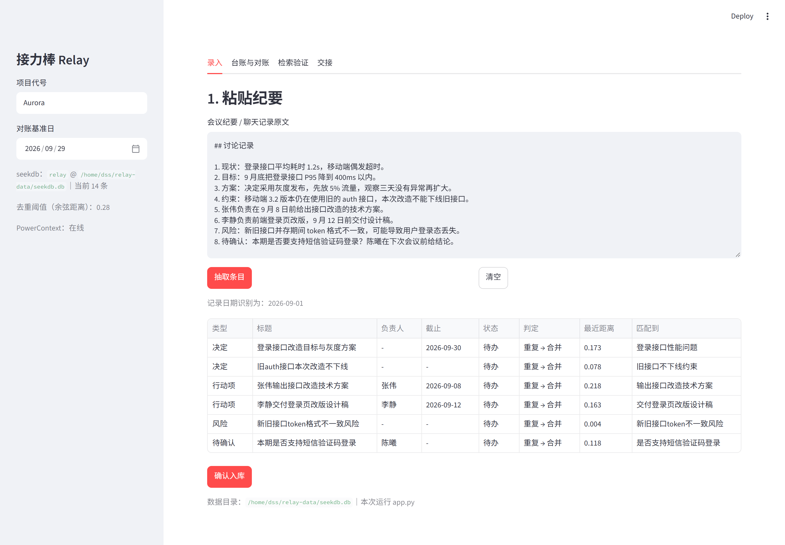
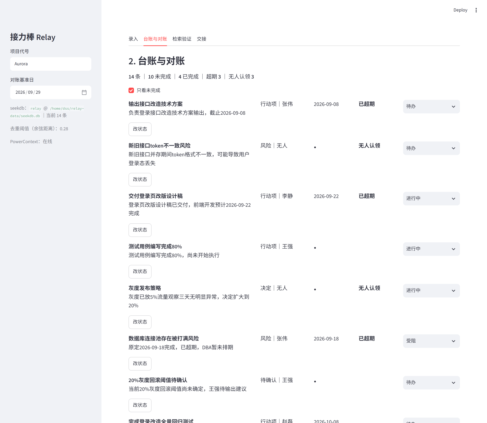
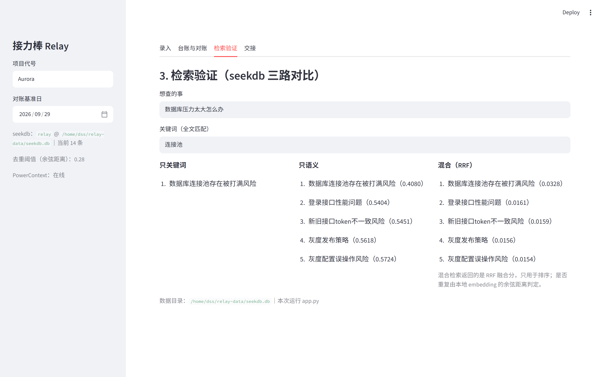
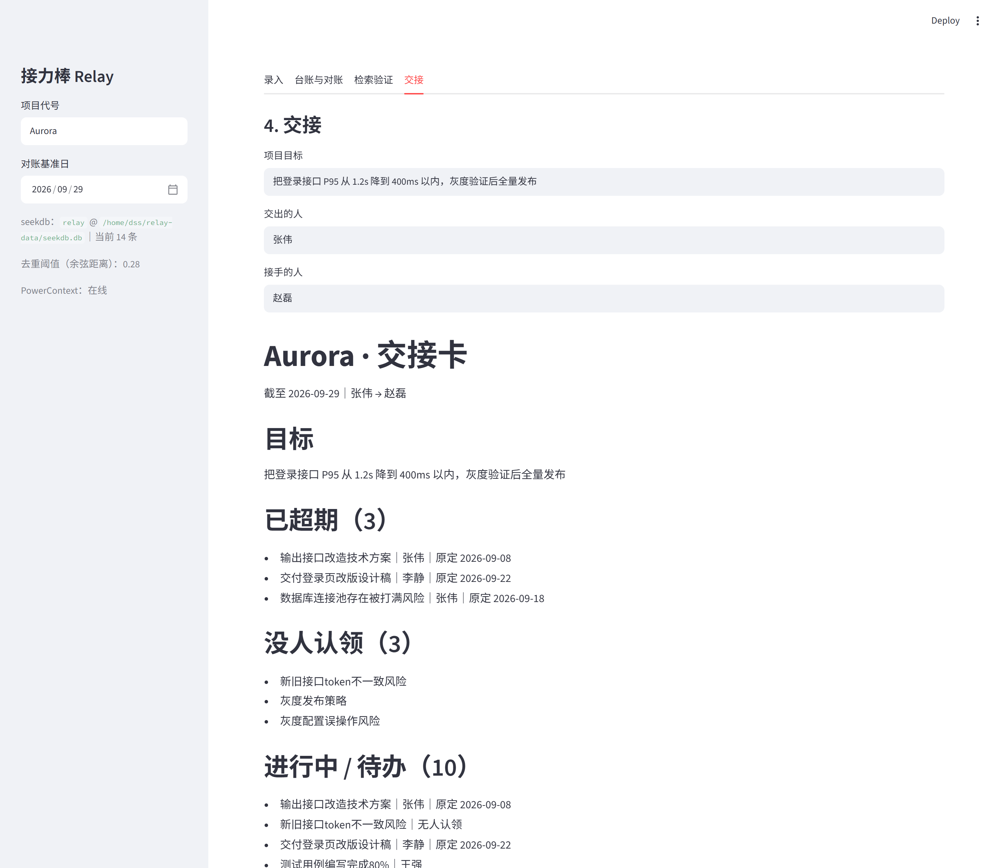

进度要反复确认
「登录接口 P95 还没到 400ms」在启动会、周会、交接会被说了三次，措辞每次不一样。 人工对齐只能靠通读聊天记录，而且读一遍就会过时。
接力棒 Relay
2026 OceanBase 数据库大赛 · Qoder 赛道
接力棒把会议纪要、聊天记录、待办抽成结构化条目，用 seekdb 判断「这条是不是上次那件事」， 用 PowerContext 把决定和约束留到下一次交接。产出一张能对超期、能对失联、能直接发给接手人的台账。
上面的数字来自 evidence/03-demo-e2e.log 那一次完整运行。抽取由 StepFun 完成，
条数每次会有小幅浮动（多一两条说法略有不同的小项），但「合并 / 新增」的判定和台账结构不变。
「登录接口 P95 还没到 400ms」在启动会、周会、交接会被说了三次，措辞每次不一样。 人工对齐只能靠通读聊天记录，而且读一遍就会过时。
人一调走，「旧 auth 接口不能下线，因为移动端 3.2 还在用」这类约束就留在历史消息里。 接手的人不知道有这条约束，一旦下线就是事故。
任务散在纪要里，没有基准日，也就没人发现「原定 9 月 18 日联系 DBA」其实已经超期两周。
判断「这条是不是上次那件事」，只靠关键词会漏，只靠语义会错。
同一个查询跑三种检索，实测结果如下（台账 14 条，见 evidence/02-retrieval-on-ledger.log）：
只关键词 连接池
精确命中 1 条，但换个说法就找不到。
只语义 数据库压力太大怎么办
原文没有「压力」也命中了，但带回了 4 条无关项。
混合检索 hybrid_search + RRF
一次调用三路融合；括号里是 RRF 融合分，只用于排序。
RRF 分不能当相似度用，所以流程是「混合检索召回候选 → 本地 bge 向量复核余弦距离」。 三份纪要跑下来，距离分布分成两簇，中间是空的：
| 判定 | 条目对 | 余弦距离 |
|---|---|---|
| 同一件事 | 给出 20% 灰度回滚阈值建议 ↔ 20%灰度回滚阈值待确认 | 0.047 |
| 同一件事 | 登录页改版设计稿已交付 ↔ 交付登录页改版设计稿 | 0.062 |
| 同一件事 | 旧 auth 接口暂不下线 ↔ 旧接口不下线约束 | 0.073 |
| 同一件事 | 灰度流量从 5% 扩大至 20% ↔ 灰度发布策略 | 0.129 |
| 同一件事 | 登录接口改造方案评审通过 ↔ 登录接口性能问题 | 0.238 |
| 不同任务 | 交付登录页改版设计稿 ↔ 输出接口改造技术方案 | 0.289 |
| 不同任务 | 完成登录改造三项前置工作 ↔ 输出接口改造技术方案 | 0.312 |
| 不同任务 | 灰度配置误操作风险 ↔ 灰度发布策略 | 0.329 |
| 不同任务 | 新旧接口 token 不一致风险 ↔ 旧接口不下线约束 | 0.355 |
| 不同任务 | 是否支持短信验证码登录 ↔ 新旧接口 token 不一致风险 | 0.495 |
合并一簇最大 0.238，新增一簇最小 0.289，阈值取 0.28 正好落在中间。 校准阶段试过 0.45 和默认的 0.62：三份纪要会被压成个位数条目，整个项目塌成一条任务，超期和失联全部归零—— 这是本项目里唯一一处「模型看起来在工作、其实全错」的地方。
namespace 与标量过滤
同一套库承载多项目：查询时带 {"project": "Aurora"}
与 {"status": {"$in": [...]}}，去重只在同项目、未完成的任务里比。
嵌入式跑在 WSL
seekdb 没有 Windows 原生包，用 pyseekdb 嵌入式实例；
数据目录放 WSL 文件系统，避开 /mnt/c 的文件锁。SEEKDB_HOST 一填即切 server 模式。
台账解决「现在有哪些事」，解决不了「为什么这么定」。约束必须活得比单次会话久， 而且交接必须可确认——不能是「我口头交代过了」。
三份纪要原文落库，条目可回溯到原文位置
决定与约束写成 atomic-memory，交接时自动召回
目标、在范围、排除项、完成标准、未确认问题：position=44
当前状态 + 下一步，逐条带证据引用：position=45
接手人自检（现场/能力/授权）后 accept，证据状态 available
本轮结果与剩余工作落库：position=47
三个 position 取自 evidence/03-demo-e2e.log 那次运行；
PowerContext 的位置在同一 Scope 内单调递增，每跑一轮演示都会往后走。
交接时 PowerContext 召回的上下文（/v1/context/prepare，2036 字节，节选自 evidence/04-powercontext-setup.log）
旧接口不下线约束：因移动端3.2版本仍在使用旧auth接口，该接口暂不能下线
登录接口P95性能目标：当前20%灰度下登录接口P95为520ms，距离400ms的目标仍有差距
每条都带 artifact_id + revision 引用，可回溯到原文；接手人不必重读三次纪要。
说清楚边界：本地未给 PowerContext 配推理模型，memory/search 走的是
mode=text 的词面召回；配上 embedding 后会切到语义模式。这一点在界面侧栏也会如实显示。
核心链路跑在本地（Streamlit + WSL 里的 seekdb / PowerContext）。本站是展示站： 下面是真实运行截图与真实数值，不是设计稿。




# Aurora 登录改造 · 交接卡
截至 2026-09-29｜张伟 → 赵磊
## 目标
把登录接口 P95 从 1.2s 降到 400ms 以内，灰度验证后全量发布
## 已超期（3）
- 输出接口改造技术方案｜张伟｜原定 2026-09-08
- 交付登录页改版设计稿｜李静｜原定 2026-09-22
- 数据库连接池存在被打满风险｜张伟｜原定 2026-09-18
## 没人认领（3）
- 新旧接口token不一致风险
- 灰度发布策略
- 灰度配置误操作风险
## 生效中的决定与约束（3）
- 灰度发布策略：灰度已放5%流量观察三天无明显异常，决定扩大到20%
- 旧接口不下线约束：因移动端3.2版本仍在使用旧auth接口，该接口暂不能下线
- 全量发布时间推迟至10月15日：原定2026-09-30全量发布，现推迟至2026-10-15
## 还没确认的问题（2）
- 是否支持短信验证码登录｜陈曦
- 20%灰度回滚阈值待确认｜王强依赖选型
step-3.5-flash（只提供对话，无 embedding 接口）fastembed + BAAI/bge-small-zh-v1.5，ONNX 运行时，512 维，
完全不装 torch（此前 sentence-transformers 会拉 1.8GB CUDA 包并反复断流）HF_ENDPOINT=https://hf-mirror.com，WSL 内访问不到 huggingface.copyseekdb 1.4.0），PowerContext 用独立 venv 避免依赖冲突命令
# WSL：起 PowerContext Server
python3.12 -m venv ~/pc-venv
~/pc-venv/bin/pip install "powercontext[cli,server]==1.4.1"
mkdir -p ~/pc-run && cd ~/pc-run
~/pc-venv/bin/powercontext config init --template -o .env
~/pc-venv/bin/powercontext server run
# Windows：跑链路
bash run.sh scripts/smoke_embed.py
bash run.sh scripts/smoke_seekdb.py
bash run.sh scripts/demo_e2e.py --reset
bash run.sh scripts/setup_powercontext.py
bash run.sh scripts/retrieval_check.py
bash run.sh --ui # http://localhost:8501四条链路的原始输出都留在仓库 evidence/ 里（seekdb 三路对比、真实台账检索、
端到端逐条判定与交接卡、PowerContext 建 Scope 与召回），页面上每个数字都能在那几份日志里找到对应行。
开发全程使用 Qoder：链路设计、seekdb / PowerContext 接口核对（对着运行中服务的
/openapi.json 而不是猜字段）、WSL 环境排障、阈值校准与界面实现。
API Key 与 seekdb 数据不进仓库，只留在 .env（已在 .gitignore）。